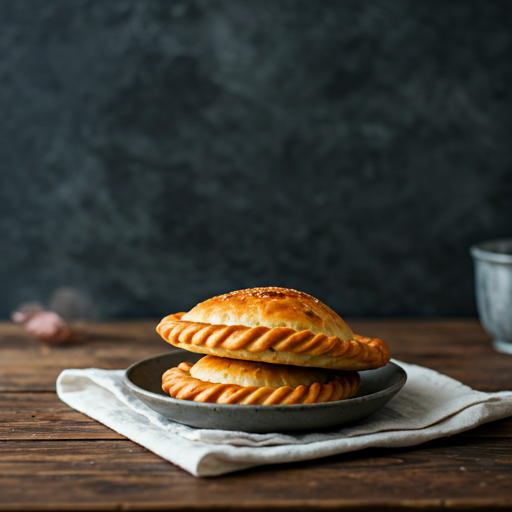
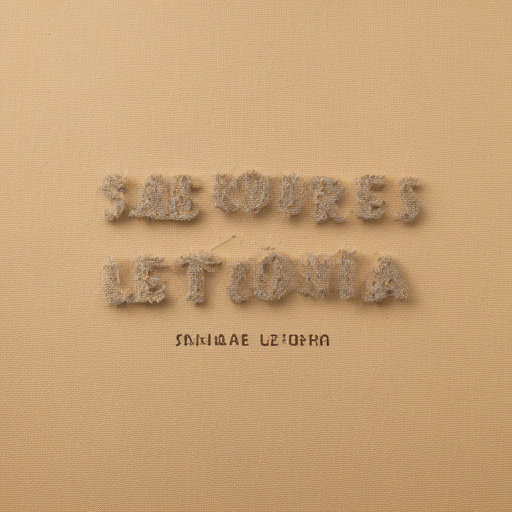
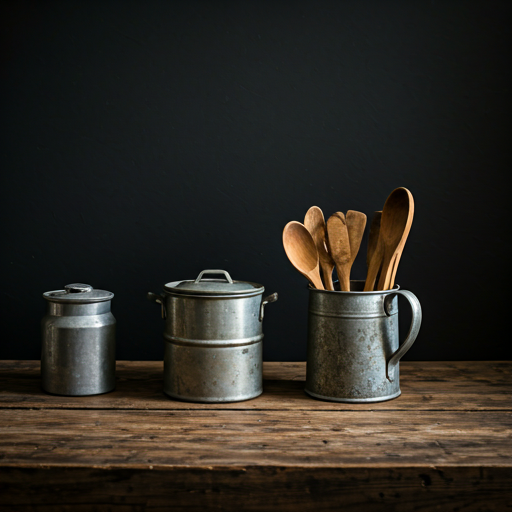
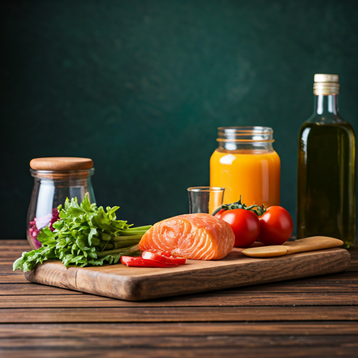
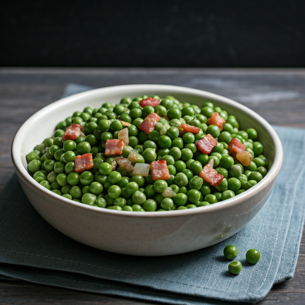
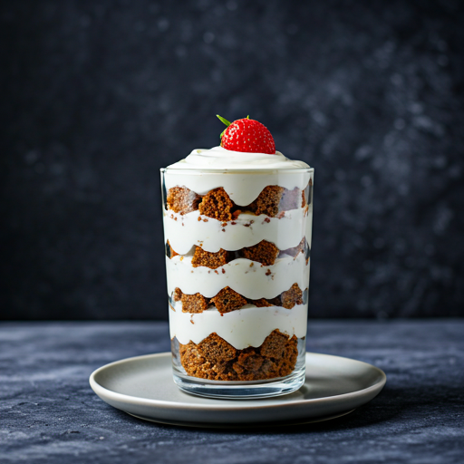
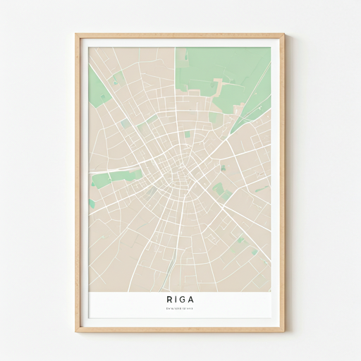

favorite Favorito

Descubre los sabores ancestrales y la calidez del hogar letón en cada plato preparado con amor y respeto por la tradición.
Traemos las recetas de nuestras abuelas desde los bosques de Letonia hasta tu paladar. Ingredientes ahumados, granos ancestrales, lácteos frescos y el alma de Riga en cada bocado. Una experiencia culinaria que conecta con la naturaleza.
Conoce más sobre nosotros arrow_forward



Guisantes grises con tocino y cebolla, el plato nacional por excelencia.
Ver detalles
Postre en capas de pan de centeno, nata montada y mermelada.
Ver detallesTe esperamos en el centro histórico de Riga.

Llámanos
+371 67 000 000
Escríbenos
sveiki@saboresdeletonia.com